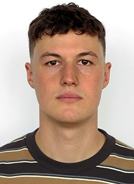

En recherche d'emploiBienvenu sur mon portfolio
Cette page est un instantané de mon parcours, le reflet des expériences qui m'ont construit au fil des années. C'est un espace où se croisent mes différentes expériences professionnelles, mes apprentissages et ce qui m'anime au quotidien. Je vous laisse découvrir le chemin qui m'a mené jusqu'ici juste en dessous. le portfolio n'est pas totalement complet, je travaille encore à l'ajout de projets et d'expériences, mais n'hésitez pas à me contacter si vous souhaitez en savoir plus sur mon parcours ou discuter d'opportunités professionnelles.
À Propos de Moi
Mon parcours est un mélange de précision horlogère, d'ingénierie mécanique et de leadership. Tout a commencé par un apprentissage de dessinateur en construction microtechnique chez Simon & Membrez SA (aujourd'hui Blancpain), où j'ai développé une expertise en conception de boîtiers de montres sur CATIA V5, alliant design et contraintes de fabrication. En parallèle, j'ai obtenu une maturité professionnelle technique.
Désireux d'élargir mes horizons, je suis parti pour un semestre à Berlin afin de perfectionner mon allemand — une aventure humaine autant qu'académique, complétée par un stage pratique en usinage CNC. À mon retour, j'ai effectué mon service militaire et gravi les échelons jusqu'au grade de Lieutenant. Commander une section de 30 soldats m'a appris que la technique sans l'humain ne vaut pas grand-chose.
Aujourd'hui, je suis étudiant en génie mécanique à la HEIA de Fribourg dans un cursus bilingue français-allemand. Je m'implique dans des projets qui me font sortir de ma zone de confort : rétro-ingénierie d'un compresseur sur Siemens NX, conception d'un robot pour Eurobot — un projet qui m'a plongé dans la programmation et l'électronique avec beaucoup d'enthousiasme.
Mon Parcours
Bachelor Génie Mécanique — HEIA-FR
Cursus bilingue français-allemand. Projets académiques : rétro-ingénierie d'un compresseur, robot Eurobot, site web Lachat Métal.
Voir les projetsLieutenant — Armée Suisse
Promotion au grade de Lieutenant après l'école d'officiers. Commandement d'une section de 30 soldats pendant 19 semaines. Obtention du Certificat de Conduite Niveau 1 de l'ASC. Permis C1E & D1E également obtenus.
Voir les projetsSemestre à Berlin & Stage CNC
Perfectionnement en allemand à Berlin, suivi d'un stage de 4 mois en tant qu'opérateur CNC chez Promess Fertigung GmbH.
Voir les projetsCFC & Maturité Professionnelle
Dessinateur en construction microtechnique chez Simon & Membrez SA (Blancpain). Formation à la précision horlogère avec CATIA V5, incluant les bases et les applications horlogères, ainsi que l'obtention de la maturité professionnelle technique.
Voir les projetsÉcole obligatoire
Scolarité obligatoire avec les bases de l'enseignement secondaire et la préparation au parcours professionnel.
Mes Compétences
Conception & CAO
- •CATIA V5 (Basic & Surfacique)
- •Siemens NX
- •Conception Mécanique
- •Dessin Technique 2D/3D
- •Rétro-ingénierie
Gestion & Leadership
- •Gestion de Projet
- •Management d'équipe (30 pers.)
- •Communication & Présentation
- •Planification & Organisation
Robotique & Informatique
- •Programmation (Python, HTML, CSS)
- •Électronique de commande
- •Suite O365, LaTeX
Fabrication & Qualité
- •Usinage sur machines CNC
- •Procédés de fabrication
- •Contrôle qualité
- •Montage et assemblage
Langues
- •Français (Langue maternelle)
- •Allemand (B2 – Cursus bilingue)
- •Anglais (B2)
En Dehors du Travail
Ce qui m'anime au quotidien
Code & Automatisation
Intéressé par l'innovation je me tiens à jour des dernières tendances (IA, Automatisation)
Voyages
Découvrir d'autres cultures et mentalités — Berlin n'était qu'un début
Sport
Course à pied et randonnée pour me ressourcer, foot et hockey pour le plaisir